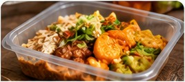
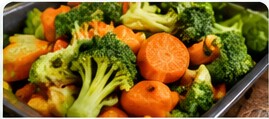

Community food board
Explore Food Listings
Browse sample meals, fresh produce and bakery items shared for the project demonstration.




Food safety reminder: These are illustrative sample listings. Always confirm preparation time, ingredients, allergens, storage and pickup arrangements directly.